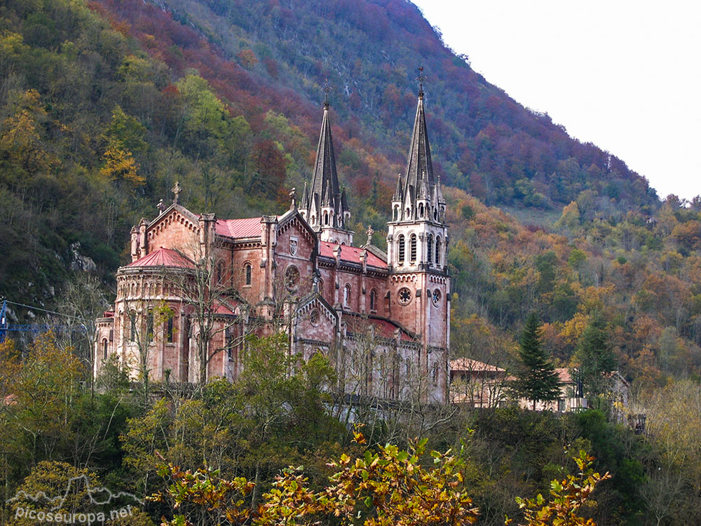

Asturias estuvo ocupada por grupos humanos desde el Paleolítico Inferior y durante
el superior se caracterizó por las pinturas rupestres del oriente de la Comunidad.
En el Mesolítico se desarrolló una cultura original, el asturiense. A continuación
se introdujo la Edad de Bronce, caracterizada por los megalitos y túmulos. Durante
la Edad de Hierro, con raíces en la tradición local del Bronce final atlántico, se
desarrollaron un conjunto de comunidades que construían y habitaban en castros. Estas
poblaciones evolucionaron localmente durante todo el primer milenio antes de nuestra
era, hasta la llegada de los romanos al noroeste peninsular, que percibieron a dichas
poblaciones como parte de una realidad étnica (los astures) que no correspondía con la
realidad ya que difícilmente esas comunidades mantenían una conciencia clara de pertenencia
a una estructura socio-política más allá de unidades locales, comarcales, estructuradas
en unidades territoriales como valles o cuencas fluviales.
La conquista romana sobre los celtas entre 29 y 19 a. C. en las guerras cántabras termina
la conquista de Hispania. Durante este período romano destacaron las labores mineras
realizadas por el Estado Romano, con el oro del Occidente asturiano como centro del
esquema territorial en época alto-imperial. La explotación minera de las riquezas
auríferas decayó en los siglos ii-iii d. C. en favor de las minas romanas de la región
de la Dacia, conquistada para el Imperio entonces (agotamiento total de minas, como Las
Médulas en lo que era el sur de Asturias. El otro esquema complementario de estos
momentos eran las explotaciones agropecuarias, villas romanas como las de Veranes
(Gijón) o Memorana (Lena), además del surgimiento de núcleos fortificados como Gegionem (Gijón).
Tras una pobre romanización, los visigodos intentaron ejercer control sobre el territorio
durante el siglo vi sin resultado, que terminó a principios del siglo viii con la invasión
musulmana. El territorio, como había sucedido con Roma y Toledo, no fue fácil de someter,
estableciéndose en 722 una independencia de facto como Reino de Asturias tras la victoria
de Pelayo en la batalla de Covadonga. A partir de entonces el pequeño reducto de nobles
godos y astures comenzó a recuperar el territorio perdido ante la conquista musulmana del
año 711, incorporó bajo su órbita el territorio que había pasado a ser tierra de nadie
desde el río Eo hasta el Duero y creó durante este período un arte propio, el arte
prerrománico asturiano que se extendió por sus dominios, hasta el sur de la actual
Galicia. En el siglo x el centro de poder se trasladó desde Oviedo a León dando lugar
al Reino de León. A partir de entonces el aislamiento propiciado por la cordillera
Cantábrica, el traslado de los centros de decisión del Reino y el movimiento de la
frontera con los reinos de taifas de al-Ándalus hace que las referencias históricas
sean escasas. Tras la rebelión del hijo de Enrique II de Trastámara, se establece el
Principado de Asturias. Si hubo varios intentos de independencia, los más conocidos
fueron el conde Gonzalo Peláez o la reina Urraca que aun consiguiendo importantes
victorias al final fueron derrotados por las tropas de Castilla. En el siglo xvi el
territorio alcanzó por primera vez los 100 000 habitantes, número que se duplicó con
la llegada del maíz americano en el siglo siguiente.
El 8 de mayo de 1808, la Junta General del Principado de Asturias (Antiguo Régimen)
declaró la guerra a Francia y se proclamó soberana, creando ejército propio y enviando
embajadores al extranjero, siendo el primer organismo oficial de España en dar ese paso.
En ese momento se formaron cuerpos militares propios como el Regimiento de Candás y Luanco.
El 1 de enero de 1820 el oficial Rafael de Riego, oriundo de la parroquia asturiana de
Tuña, se sublevó en Cádiz proclamando el retorno a la Constitución de 1812.
A partir de 1830 comenzó la explotación sistemática del carbón y se inició la revolución
industrial en la comunidad especialmente en la zona centro del Principado. Más tarde se
establecieron potentes industrias siderúrgicas en La Felguera, Mieres y Gijón en el siglo
xix, y en Avilés en la segunda mitad del XX, además la industria naval desde el xix.
El 6 de octubre de 1934 comenzó un alzamiento revolucionario en la cuenca minera provocado
por la negativa de los revolucionarios a permitir la entrada de la CEDA en el gobierno, algo
que suponía un avance del fascismo en España. La Revolución de 1934 tuvo a Asturias por
escenario principal, quedando Oviedo asolada en buena parte. Sufrieron graves daños edificios
como el la Universidad que fue atacada por los revolucionarios y en cuya biblioteca se guardaba
fondos bibliográficos que no se pudieron recuperar; o el teatro Campoamor, en este caso
incendiado por las fuerzas gubernamentales. La Cámara Santa en la catedral fue dinamitada
aunque se salvaron milagrosamente sus joyas.
El 25 de agosto de 1937 se proclamó en Gijón el Consejo Soberano de Asturias y León presidido
por el dirigente sindical y socialista Belarmino Tomás, terminando el conflicto el 20 de octubre
de 1937 con la victoria de las tropas ultraderechistas en el frente norte, con su respectiva sangrienta represión.
Tras veinte años de estancamiento económico, se produjo la definitiva industrialización de Asturias
en las décadas de 1960 y 1970. Fuertemente afectado por la reconversión industrial de la década de
1990, el Principado intentó potenciar sus abundantes recursos paisajísticos y naturales con vistas
al sector turístico, política que continúa hasta el día de hoy, en el siglo xxi.
Santuario de Covadonga
La visita al santuario comenzará contemplando los dos leones en mármol de Carrara. A la
izquierda, abierta en el monte Auseva, la Santa Cueva, sobre la laguna que genera la cascada
del río Deva; debajo de la mencionada cascada, la Fuente de los Siete Caños, que según la
canción popular asturiana: "... la neña que d‘ella bebe, dentro del añu se casa."
Cumplido el rito de beber en la fuente y arrojar una moneda al agua de la laguna, por
las escaleras de la derecha, accedemos a una pequeña plaza donde se encuentra el Canapé de
tiempos de Carlos III.
A la gruta subimos por una escalera de 101 escalones que muchos peregrinos suben de
rodillas para hacer cumplir las distintas promesas.
En la cueva se encuentra la imagen de la Virgen, S. XVIII, que sustituye a la primitiva,
destruida en un incendio, en 1777. Sus joyas, son una reproducción de las auténticas que se
encuentran en el Museo.
Rodeando a la Virgen, aparecen algunos de los reyes asturianos en una exedra que imita
el estilo prerrománico asturiano, obra del orfebre Juan José García, autor también del
antipendio del altar en el que se representa la batalla de Covadonga.
En la misma cueva, se encuentran: una pequeña capilla neorománica, obra de M. Pidal,
que sustituyó al antiguo Camarín; dos tumbas: la de Alfonso I y la de Pelayo con su mujer
Gaudiosa y su hermana Ermesinda, que originariamente estaban enterrados en Abamia y que
fueron trasladados aquí en época de Alfonso X.
Anfiteatro de Cudillero
Al igual que si se tratase de la época romana la villa de Cudillero cuenta para la
satisfacción propia, y para el disfrute del turista por su disposición arquitectónica y su
ubicación, de un hermoso anfiteatro, donde las casas aparece superpuestas unas sobre otras
aprovechando cada rincón minucioso.
Recibe el nombre de “anfiteatro” pues las casas simulan los palcos y la plaza sería la
escena. Una de las cosas que más caracteriza este lugar es el colorido que lucen las casas
sobre todo en las ventanas y en los aleros.
Cudillero es un pueblo que vive del mar, desde siempre, desde tiempos inmemoriales.
Se nota en el ambiente, la mayor parte de sus ciudadanos vive junto al mar, en una sucesión
de casitas que aparecen colgadas casi del azul del mar, en un pequeño anfiteatro de
edificaciones escalonadas, de estrechas y empinadas calles llenas de tipismo y encanto.
Sin duda, uno de los pueblos más bonitos de España.
Dichos habitáculos se desenvuelven como aros concéntricos para culminar en el escenario
que forma la Plaza de la Marina. Todo él en sí está catalogado como Conjunto Histórico Artístico.
En este lugar se encuentra situada la Ruta de los Miradores que consiste en desvaírse
entre las callejuelas en sentido ascendente y siguiendo la barandilla azul se accede a los
miradores que están dentro del casco antiguo.